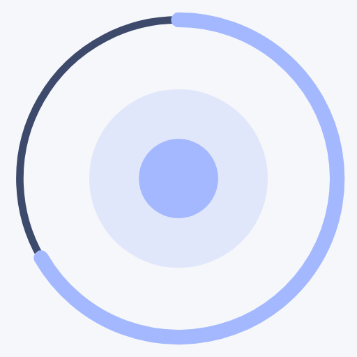
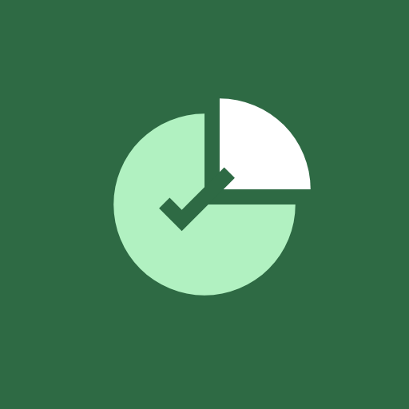

Android apps
Apps by Gerrit Schimpf
Focused Android apps that each do one job well.
Apps
 Alarm Clock: Wake-Up MissionsReliable alarms for heavy sleepers. Solve a task to switch the alarm off.
Alarm Clock: Wake-Up MissionsReliable alarms for heavy sleepers. Solve a task to switch the alarm off. Allotment Club LedgerRent, dues, meters and receipts for allotment club treasurers
Allotment Club LedgerRent, dues, meters and receipts for allotment club treasurers Anti-Bucket List: No JournalWrite down what you said no to and check later if you're still glad.
Anti-Bucket List: No JournalWrite down what you said no to and check later if you're still glad.
Binaural BeatsBinaural and isochronic beats to relax, focus or sleep. Boat Trailer Tongue WeightCheck tongue weight, axle loads and tow ratings of your boat trailer rig.
Boat Trailer Tongue WeightCheck tongue weight, axle loads and tow ratings of your boat trailer rig. Der MonarchTurn-based economic strategy in 1720s Germany: rise from reeve to emperor.
Der MonarchTurn-based economic strategy in 1720s Germany: rise from reeve to emperor. Dyslexia Reader: Book ReaderRead books with dyslexia-friendly fonts, a line ruler and read aloud.
Dyslexia Reader: Book ReaderRead books with dyslexia-friendly fonts, a line ruler and read aloud. Field Forms: Job Sheets & PDFsJob sheets, checklists, quotes and invoices with photos and signatures as PDFs
Field Forms: Job Sheets & PDFsJob sheets, checklists, quotes and invoices with photos and signatures as PDFs GLP Mate: GLP-1 Shot TrackerPrivate diary for GLP-1 shots, side effects, weight, food and supply.
GLP Mate: GLP-1 Shot TrackerPrivate diary for GLP-1 shots, side effects, weight, food and supply.- Grief Letter JournalWrite unsent letters to someone you lost. Private and encrypted on your phone.
 Health Reports: BP & Sleep PDFTurn Health Connect blood pressure, heart rate and sleep into a PDF report.
Health Reports: BP & Sleep PDFTurn Health Connect blood pressure, heart rate and sleep into a PDF report. Hipoteca: Mortgage CalculatorPlan, compare and track a Spanish mortgage: costs, taxes and Euríbor risk.
Hipoteca: Mortgage CalculatorPlan, compare and track a Spanish mortgage: costs, taxes and Euríbor risk. Hive Log: Beekeeping JournalLog hive inspections, treatments and feedings, track varroa, set reminders.
Hive Log: Beekeeping JournalLog hive inspections, treatments and feedings, track varroa, set reminders. Horse Care Log: Farrier & VetHorse care log: farrier, vaccines, worming, vet notes, costs, reminders.
Horse Care Log: Farrier & VetHorse care log: farrier, vaccines, worming, vet notes, costs, reminders. Job Loss Plan: 12-Week GuideLaid off? A calm 12-week checklist with deadlines, budget and runway math.
Job Loss Plan: 12-Week GuideLaid off? A calm 12-week checklist with deadlines, budget and runway math. Metronome & Practice LogMetronome that logs your practice time automatically and tracks your streak
Metronome & Practice LogMetronome that logs your practice time automatically and tracks your streak- Minijob Calculator GermanyGerman Minijob limit, hours and employer cost 2026/2027. No account.
 Numeric IBS Symptom ScorerRate IBS symptoms 0-10, log bowel movements and food, spot possible triggers.
Numeric IBS Symptom ScorerRate IBS symptoms 0-10, log bowel movements and food, spot possible triggers. Okey Score Counter: 101 OkeyScore 101 Okey and Okey: penalties, history, player stats and a widget.
Okey Score Counter: 101 OkeyScore 101 Okey and Okey: penalties, history, player stats and a widget. Paint Calc: Room Paint AmountWork out how much paint a room needs, with coats, doors and waste
Paint Calc: Room Paint AmountWork out how much paint a room needs, with coats, doors and waste PDF Reader & ScannerRead, search, scan and sign PDFs on your phone.
PDF Reader & ScannerRead, search, scan and sign PDFs on your phone. Pipe Sizing: IPC & UPC WaterSize water supply pipe from WSFU or GPM with velocity and friction loss
Pipe Sizing: IPC & UPC WaterSize water supply pipe from WSFU or GPM with velocity and friction loss Pizza Calc: Dough CalculatorPizza dough in grams: 16 styles, yeast for any schedule, preferments.
Pizza Calc: Dough CalculatorPizza dough in grams: 16 styles, yeast for any schedule, preferments. Pool Chem Log: Water TestsLog pool and spa water tests and get FC/CYA dosing for chlorine, pH and more.
Pool Chem Log: Water TestsLog pool and spa water tests and get FC/CYA dosing for chlorine, pH and more. Purpose Planner: RetirementPlan your week in retirement: routines, projects, volunteering and check-ins.
Purpose Planner: RetirementPlan your week in retirement: routines, projects, volunteering and check-ins. Sourdough Hydration JournalBaker's percentages, starter feeding log and bake journal for home sourdough.
Sourdough Hydration JournalBaker's percentages, starter feeding log and bake journal for home sourdough. Steak Doneness Chart & TimerPull temps for steak, pork, chicken, lamb and fish, with a rest and flip timer.
Steak Doneness Chart & TimerPull temps for steak, pork, chicken, lamb and fish, with a rest and flip timer.
Storage Analyzer: Big FilesFind large files, duplicates and old junk, then clear space safely. Stutter Practice: DAFDAF, paced speech and easy onset practice for people who stutter.
Stutter Practice: DAFDAF, paced speech and easy onset practice for people who stutter. TDS Section Calc IndiaCalculate TDS by section with 1961 and 2025 Act numbers and due dates.
TDS Section Calc IndiaCalculate TDS by section with 1961 and 2025 Act numbers and due dates. Tekkno Rave DAW: Beat MakerHard techno and hardcore groovebox with pads, a pitch grid and a song view.
Tekkno Rave DAW: Beat MakerHard techno and hardcore groovebox with pads, a pitch grid and a song view. Time Study StopwatchTime work elements with one lap tap. Averages, rating and standard time.
Time Study StopwatchTime work elements with one lap tap. Averages, rating and standard time. Tinag2: Icinga & Nagios AlertsWatch Icinga 2 and Nagios problems, acknowledge them and get alerts.
Tinag2: Icinga & Nagios AlertsWatch Icinga 2 and Nagios problems, acknowledge them and get alerts. WiFi Scanner & Network ToolsSee who is on your WiFi. Ping, traceroute, DNS lookup and port checks.
WiFi Scanner & Network ToolsSee who is on your WiFi. Ping, traceroute, DNS lookup and port checks. Wire Gauge Calculator: NECSize wire by NEC ampacity, voltage drop and breaker rules
Wire Gauge Calculator: NECSize wire by NEC ampacity, voltage drop and breaker rules
Guides
- Alarm Not Going Off on Android: Causes and FixesAlarm Clock: Wake-Up Missions
- Math Alarm Problems: Easy, Medium and Hard ExamplesAlarm Clock: Wake-Up Missions
- Snooze Time Calculator: How Late Will You Wake Up?Alarm Clock: Wake-Up Missions
- Allotment water meter cost: formula and exampleAllotment Club Ledger
- Gemeinschaftsstunden Ersatzgeld berechnenAllotment Club Ledger
- Kleingarten Pacht berechnen: per m² and by monthAllotment Club Ledger
- How to Keep a Journal of Things You Said No ToAnti-Bucket List: No Journal
- Regret Rate Calculator: How Often Do You Regret No?Anti-Bucket List: No Journal
- Binaural Beat Frequency Calculator and FormulaBinaural Beats
- Brainwave Frequency Chart: Delta, Theta, Alpha, Beta, GammaBinaural Beats
- Boat Fuel and Water Weight per Gallon ChartBoat Trailer Tongue Weight
- Boat Trailer Tongue Weight Calculator and FormulaBoat Trailer Tongue Weight
- How to Increase Boat Trailer Tongue WeightBoat Trailer Tongue Weight
- Der Monarch feeding and harvest guide with formulasDer Monarch
- Der Monarch ranks and what each rank needsDer Monarch
- Der Monarch sea routes chart: cost, return and oddsDer Monarch
- Dyslexia-Friendly Fonts Compared and How to Set Them UpDyslexia Reader: Book Reader
- How to Read a PDF in a Dyslexia-Friendly Font on AndroidDyslexia Reader: Book Reader
- Reading Time Calculator: How Long to Read a BookDyslexia Reader: Book Reader
- Invoice Due Date and Overdue: How to Work It OutField Forms: Job Sheets & PDFs
- Invoice Total With Tax: Formula and CalculatorField Forms: Job Sheets & PDFs
- Job Sheet Template: What to Include and WhyField Forms: Job Sheets & PDFs
- BMI Calculator and Chart: Formula in kg/cm and lb/inGLP Mate: GLP-1 Shot Tracker
- Semaglutide, Tirzepatide and Liraglutide Half-Life ChartGLP Mate: GLP-1 Shot Tracker
- Death Anniversary Date Calculator and Leap Day RuleGrief Letter Journal
- Unsent Letter Prompts for Grief, by RelationshipGrief Letter Journal
- Average Blood Pressure Calculator for Home ReadingsHealth Reports: BP & Sleep PDF
- Blood Pressure Categories Chart (AHA, mmHg)Health Reports: BP & Sleep PDF
- How to Make a Blood Pressure PDF from Health ConnectHealth Reports: BP & Sleep PDF
- Mortgage Monthly Payment Formula With ExampleHipoteca: Mortgage Calculator
- Spain Mortgage Early Repayment Fee: Legal CapsHipoteca: Mortgage Calculator
- Bee Syrup Ratio 1:1 and 2:1 Chart and ConverterHive Log: Beekeeping Journal
- Bee Treatment Withdrawal Period CalculatorHive Log: Beekeeping Journal
- Horse Farrier Schedule Calculator: Next Due DateHorse Care Log: Farrier & Vet
- Horse Vaccination Record: What to Write DownHorse Care Log: Farrier & Vet
- COBRA Election Deadline: How the 60 Days WorkJob Loss Plan: 12-Week Guide
- Layoff Runway Calculator: How Many Weeks Will Savings LastJob Loss Plan: 12-Week Guide
- How to Calculate Average BPM of a Practice SessionMetronome & Practice Log
- BPM to Milliseconds Calculator and FormulaMetronome & Practice Log
- Tempo Markings BPM Chart: Largo to PrestissimoMetronome & Practice Log
- Minijob Employer Cost and Contribution Rates TableMinijob Calculator Germany
- Minijob Maximum Hours per Month 2026 and 2027Minijob Calculator Germany
- Bristol Stool Chart: Types 1 to 7 Explained for IBSNumeric IBS Symptom Scorer
- IBS Food Trigger Calculator: Score Your Food DiaryNumeric IBS Symptom Scorer
- 101 Okey Scoring Rules: Points Table and ExampleOkey Score Counter: 101 Okey
- Okey Scoring Chart: Points for Standard OkeyOkey Score Counter: 101 Okey
- How Much Paint Do I Need for a Room? Formula and ExamplePaint Calc: Room Paint Amount
- How Much Paint for a 12x12 Room? Gallons by Room SizePaint Calc: Room Paint Amount
- Paint Coverage Converter: sq ft per Gallon to m² per LiterPaint Calc: Room Paint Amount
- How to Make a Scanned PDF Searchable on AndroidPDF Reader & Scanner
- Open a Password-Protected PDF on AndroidPDF Reader & Scanner
- How to Sign a PDF on Android With Your FingerPDF Reader & Scanner
- Copper and PEX Pipe Size Chart by GPM and VelocityPipe Sizing: IPC & UPC Water
- Hazen-Williams Friction Loss Formula With ExamplePipe Sizing: IPC & UPC Water
- WSFU to GPM Conversion Chart (Hunter Curve)Pipe Sizing: IPC & UPC Water
- Pizza Dough Baker's Percentage Calculator, Worked ExamplePizza Calc: Dough Calculator
- Pizza Dough Water Temperature Calculator and FormulaPizza Calc: Dough Calculator
- FC/CYA Chart for Pool Chlorine LevelsPool Chem Log: Water Tests
- Pool CSI Calculator: Saturation Index ExplainedPool Chem Log: Water Tests
- Pool Volume Calculator: Gallons by ShapePool Chem Log: Water Tests
- Days Until Retirement Calculator and FormulaPurpose Planner: Retirement
- Retirement Weekly Schedule Template With ExamplePurpose Planner: Retirement
- How to Scale a Sourdough Recipe With Baker's PercentagesSourdough Hydration Journal
- Sourdough Starter Feeding Ratio Chart (1:1:1, 1:2:2, 1:5:5)Sourdough Hydration Journal
- Sourdough True Hydration Calculator With StarterSourdough Hydration Journal
- Safe Internal Temperature Chart for Meat and FishSteak Doneness Chart & Timer
- Carryover Cooking: When to Pull Steak Off the HeatSteak Doneness Chart & Timer
- Steak Doneness Temperature Chart (°F and °C)Steak Doneness Chart & Timer
- How to Find Duplicate Files on AndroidStorage Analyzer: Big Files
- How to Find Old Unused Files on AndroidStorage Analyzer: Big Files
- MB to GB Conversion Chart for Phone StorageStorage Analyzer: Big Files
- DAF Delay Settings in ms: What to Set and WhyStutter Practice: DAF
- Easy Onset Exercises for Stuttering, Step by StepStutter Practice: DAF
- Syllables Per Minute Chart for Paced SpeechStutter Practice: DAF
- TDS Due Dates and Late Interest CalculationTDS Section Calc India
- TDS on Contractor Payment 194C: Calculator and ExampleTDS Section Calc India
- TDS Rate Chart FY 2025-26 with New Section NumbersTDS Section Calc India
- BPM to ms Chart for Hard Techno, 140 to 220 BPMTekkno Rave DAW: Beat Maker
- Scale Intervals Chart for Minor, Phrygian, Harmonic MinorTekkno Rave DAW: Beat Maker
- How to Do a Time Study Step by StepTime Study Stopwatch
- Standard Time Formula With a Worked ExampleTime Study Stopwatch
- Get the SHA-256 fingerprint of a self-signed Icinga certificateTinag2: Icinga & Nagios Alerts
- Nagios and Icinga soft vs hard states explainedTinag2: Icinga & Nagios Alerts
- Common Network Ports List and What They MeanWiFi Scanner & Network Tools
- WiFi Channel and Frequency Chart (2.4, 5, 6 GHz)WiFi Scanner & Network Tools
- WiFi Signal Strength Chart (dBm to Signal Quality)WiFi Scanner & Network Tools
- 12V Wire Size and Voltage Drop Formula, With ExampleWire Gauge Calculator: NEC
- AWG to mm² Chart: Wire Size, Area and ResistanceWire Gauge Calculator: NEC